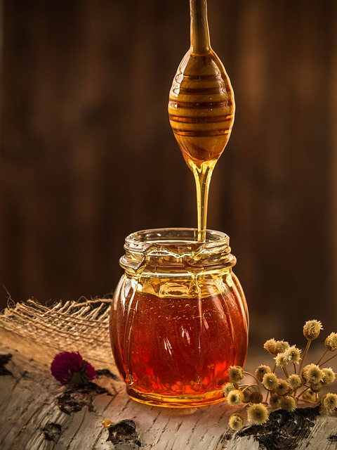

Včelařství Farná
Jsme vášniví včelaři, kteří se zaměřují na kvalitu a láskyplnou péči o včely. Na naší stránce najdete informace, tipy a inspiraci pro včelaře všech úrovní. Kromě toho nabízíme také kvalitní medy na prodej, které jsou výsledkem naší pečlivé práce a péče o včely. S láskou a vášní o včelařství, Tým včelařství Farná

Produkty
Med - Akátový
Akátový med je lahodný přírodní produkt s jedinečnou chuťovou profil. Je získáván z nektaru květů akátových stromů, které se vyskytují v rozmanitých oblastech. Naše včely s láskou sbírají nektar z těchto květů a přeměňují ho v kvalitní med plný bohatého aroma.
Akátový med je známý svou světlou a jemnou konzistencí, která ho činí jedinečným. Má jemně nasládlou chuť s lehkými tóny vanilky a květinových nuancí. Jeho vynikající chuťové vlastnosti a široká škála zdravotních přínosů ho činí oblíbeným nejen mezi milovníky medu, ale také ve světě přírodní medicíny..
Náš akátový med je pečlivě sbírán a zpracováván s maximálním respektem k přírodě a včelám. Věříme v kvalitu našich produktů a poskytujeme vám záruku pravosti a čistoty medu. Když si vyberete naš akátový med, získáte lahodný a zdravý přírodní produkt, který můžete vychutnávat samostatně, přidat do pokrmů nebo použít jako přírodní sladidlo.
Obohatte své jídlo o bohatou chuť a blahodárné vlastnosti akátového medu od včelařství Farná.
Med - Lipový

Lipový med je vyjímečný přírodní produkt, který se vyznačuje bohatou aromatickou vůní a jemnou, sladkou chutí. Je získáván z nektaru květů lipových stromů, které rostou ve výběrových lokalitách s čistým prostředím. Naše včely s láskou sbírají nektar z těchto květů a přeměňují ho v kvalitní med s výjimečnými vlastnostmi.
Lipový med je známý svou světlou a krémovou konzistencí, která ho činí snadno šířitelným. Má sladkou chuť s lehkými tóny mentolu a květinových esencí. Jeho výjimečné chuťové vlastnosti a blahodárné účinky na lidské zdraví ho činí vyhledávaným medem po celém světě.
Náš lipový med je pečlivě sbírán a zpracováván s ohledem na přírodu a blaho včel. Věříme v kvalitu našich produktů a poskytujeme vám záruku autentičnosti a čistoty medu. Když si vyberete náš lipový med, dostanete lahodný a zdravý přírodní produkt, který můžete vychutnávat samostatně, přidat do nápojů nebo použít jako přírodní sladidlo.
Obohaťte své jídlo o bohatou chuť a blahodárné vlastnosti lipového medu od včelařství Farná.
Med - Slunečnicový
Slunečnicový med je výjimečný přírodní produkt s bohatou a sladkou chutí. Je získáván z nektaru květů slunečnic, které se rozkvétají v slunných polích. Naše včely s láskou sbírají nektar z těchto květů a přeměňují ho v kvalitní med s unikátním profilem chuti.
Slunečnicový med má typicky světlou a tekutou konzistenci, která ho činí snadno použitelným. Jeho chuť je bohatá a sladká s jemnými tóny květin a lehkým jantarovým nádechem. Tento med je oblíbeným výběrem nejen kvůli svému vynikajícímu vkusu, ale také díky jeho potenciálním zdravotním výhodám.
Náš slunečnicový med je pečlivě vybírán a zpracováván s ohledem na zachování přírodních vlastností a blahobytu včel. Věříme v kvalitu našich produktů a zaručujeme vám pravost a čistotu medu. Když si vyberete náš slunečnicový med, získáte kvalitní přírodní produkt, který můžete využít jako sladidlo, přísadu do pokrmů nebo jako součást vašeho zdravého životního stylu.
Obohaťte své jídlo o sladkou a slunečnicí inspirovanou chuť slunečnicového medu od včelařství Farná.